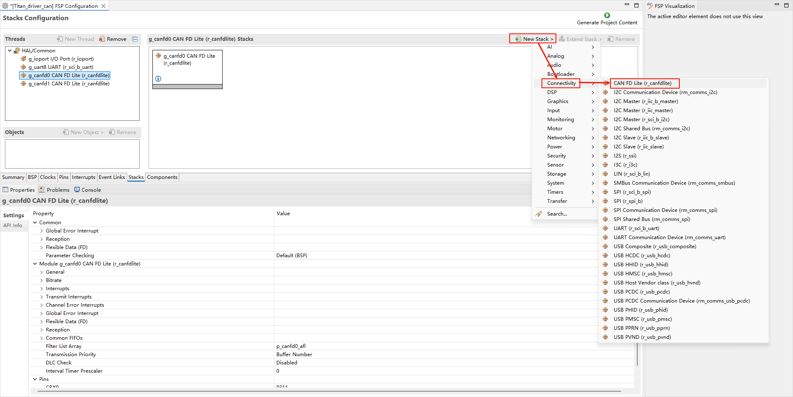
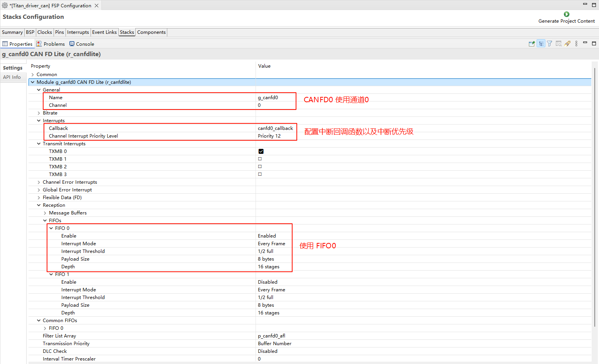
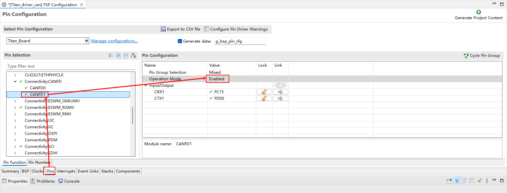

CANFD Usage Instructions
English | Chinese
Introduction
This example demonstrates how to use the CANFD (CAN with Flexible Data Rate) interface on the Titan Board, combined with the RT-Thread CAN driver framework, to implement high-speed automotive or industrial communication.
Main features include:
Initialization of the CANFD hardware interface
Configuration of baud rate, data frames, and timing parameters
Transmission and reception of standard and extended frames
Unified device management via RT-Thread CAN API
Support for high-speed data transfer using interrupts, FIFO, and DMA
CAN and CAN FD Protocol Overview
1. CAN Protocol Overview
CAN (Controller Area Network) is a multi-master serial communication protocol developed by Bosch in the 1980s for automotive electronics. It is characterized by high reliability and strong real-time capability, suitable for automotive, industrial automation, and smart devices.
Data Transmission: Bus communication based on differential signals using CAN_H and CAN_L lines
Communication Mode: Multi-master with non-destructive bus arbitration; higher-priority messages are transmitted first
Physical Layer Standards: ISO 11898-2 (High-Speed CAN), ISO 11898-3 (Low-Speed Fault-Tolerant CAN)
2. CAN Frame Formats
CAN transmits data in frames, which are categorized as:
Data Frame: Transmits data
Remote Frame: Requests data
Error Frame: Reports bus errors
Overload Frame: Provides inter-frame spacing control
2.1 Standard Frame (CAN 2.0A)
Identifier (ID): 11 bits
Data Length (DLC): 08 bytes
Field |
Length |
Description |
|---|---|---|
SOF |
1 bit |
Start of frame |
ID |
11 bits |
Message identifier |
RTR |
1 bit |
Data/remote frame flag |
IDE |
1 bit |
Standard/extended frame |
r0 |
1 bit |
Reserved |
DLC |
4 bits |
Data length code |
Data |
08 bytes |
Data field |
CRC |
15 bits + 1 |
CRC check |
ACK |
2 bits |
Acknowledgment |
EOF |
7 bits |
End of frame |
2.2 Extended Frame (CAN 2.0B)
Identifier (ID): 29 bits
Other fields are similar to the standard frame; only the ID is extended by 18 bits
3. CAN Protocol Features
Non-Destructive Bus Arbitration: Messages with lower ID values have higher priority. Lower-priority messages automatically stop transmitting in case of conflict without affecting higher-priority messages.
Differential Signal Transmission: CAN_H - CAN_L differential signals provide strong interference resistance.
Speed and Bus Length: High-speed CAN up to 1 Mbps; maximum bus length depends on speed:
1 Mbps max 40 m
500 kbps max 100 m
125 kbps max 500 m
Error Detection and Fault Tolerance: CRC check, bit stuffing, ACK check, error counters; nodes can go offline automatically in case of repeated errors.
4. CAN FD Protocol Overview
CAN FD (Flexible Data-rate), introduced by Bosch in 2012 (ISO 11898-1:2015), extends the CAN standard to address bandwidth limitations and data length restrictions.
Key Improvements:
Extended data length: from 8 bytes to 64 bytes
Variable data rate: arbitration phase remains at standard speed, while the data phase can operate 28 times faster
5. CAN FD Frame Format
5.1 CAN FD Data Frame Structure
Field |
Description |
|---|---|
SOF |
Start of frame |
ID |
11/29-bit identifier |
RTR |
Data frame flag (remote frame unused) |
IDE |
Extended frame flag |
FDF |
CAN FD frame flag |
BRS |
Bit Rate Switch |
ESI |
Error State Indicator |
DLC |
Data length code (064 bytes) |
Data |
Data field (064 bytes) |
CRC |
CRC check (17/21 bits) |
ACK |
Acknowledgment |
EOF |
End of frame |
BRS = 1: Data phase transmitted at higher speed
ESI = 1: Node is in error passive state
6. CAN FD Features
Larger data payload: up to 64 bytes per frame
Higher data rate: data phase can be 28 times faster than classic CAN
Compatibility: CAN FD nodes can coexist with classic CAN nodes; FD functionality requires hardware support
Enhanced error handling: maintains CAN error mechanisms while increasing CRC length for longer data
7. CAN vs CAN FD Comparison
Feature |
CAN |
CAN FD |
|---|---|---|
Max Data Length |
8 bytes |
64 bytes |
Data Rate |
Up to 1 Mbps |
Arbitration phase 1 Mbps, data phase 28 Mbps |
Frame Format |
Standard/Extended |
Standard/Extended + FDF/BRS/ESI |
Compatibility |
All nodes supported |
Backward compatible with classic CAN; FD nodes required |
CRC Check |
15-bit |
17/21-bit |
Applications |
Vehicle ECUs, industrial control |
High-speed data acquisition, cameras, ADAS systems |
RA8 Series CANFD Features
RA8 series MCUs integrate a high-performance CANFD controller, supporting ISO CAN 2.0A/B and CANFD protocols with high-speed communication, flexible frame length, and hardware FIFO capabilities.
1. Basic Parameters
Protocol Support
ISO CAN 2.0A/B (Classic CAN)
CAN FD (Flexible Data Rate)
Standard frame (11-bit ID) and extended frame (29-bit ID)
Data Frame Length
CAN: 08 bytes
CAN FD: 064 bytes
Communication Speed
CAN: up to 1 Mbps
CAN FD: data phase up to 8 Mbps (depends on MCU clock and PHY)
Hardware FIFO
Independent RX/TX FIFOs
Multi-frame buffering for improved throughput
FIFO-triggered interrupts can be handled via RT-Thread ISR
2. Hardware Features
Controller Architecture
Independent RX/TX FIFOs
Hardware filters (standard ID / extended ID / combined)
Auto retransmission, error detection, and bus status monitoring
Timing and Baud Rate
Configurable synchronization segment, time segments 1/2, and sampling point
CAN FD allows asynchronous baud rate for data segment
Provides auto bit-rate calculation tool
Interrupt Mechanism
Transmission complete (TX)
Frame reception (RX FIFO)
Error warning/passive
Bus-off/recovery
DMA Support
Works with MCU DMAC for high-speed transfers
TX/RX FIFO automatically read/written to memory
Reduces CPU load
Error Handling and Bus Monitoring
Error counters (TEC/REC)
Bus states: Error Active / Error Passive / Bus Off
Automatic recovery
3. Frame Format
Classic CAN Frames
Standard frame: 11-bit ID, 08 bytes
Extended frame: 29-bit ID, 08 bytes
CAN FD Frames
Supports 064 bytes
High-speed data phase
Includes BRS (Bit Rate Switch) for data acceleration
Frame Control Bits
RTR (Remote Transmission Request)
IDE (Identifier Extension)
FDF (CAN FD Frame)
ESI (Error State Indicator)
4. Applications
Vehicle ECU communication
Industrial control networks (e.g., CANopen, J1939)
Real-time sensor data acquisition
High-speed data logging and distributed control
Hardware Description

FSP Configuration
Create two
r_canfdlitestacks:

Configure the CANFD0 stack:

Configure CANFD0 pin:

Configure the CANFD1 stack:

Configure CANFD1 pin:

RT-Thread Settings Configuration
Enable CANFD0 and CANFD1:

Example Code Description
The project sends the message through canfd0 and canfd1 receives the message and prints it using the serial port.
Send code example:
static void can_tx_thread(void *parameter)
{
struct rt_can_msg msg = {0};
rt_size_t size;
msg.id = 0x78; /* ID is 0x78 */
msg.ide = RT_CAN_STDID; /* Standard format */
msg.rtr = RT_CAN_DTR; /* Data frame */
msg.len = 8; /* The data length is 8 */
/* The 8-byte data to be sent */
rt_memset(msg.data,0,sizeof(msg.data));
while(1)
{
/* Send a CAN data frame */
for(int i = 0; i < 8; i++)
{
msg.data[i] = i;
}
size = rt_device_write(can0_dev, 0, &msg, sizeof(msg));
if (size == 0)
{
rt_kprintf("can dev write data failed!\n");
}
rt_thread_delay(1000);
}
}
int can_send(int argc, char *argv[])
{
rt_err_t res;
rt_thread_t thread;
char can_name[RT_NAME_MAX];
if (argc == 2)
{
rt_strncpy(can_name, argv[1], RT_NAME_MAX);
}
else
{
rt_strncpy(can_name, CAN0_DEV_NAME, RT_NAME_MAX);
}
/* Find CAN device */
can0_dev = rt_device_find(can_name);
if (!can0_dev)
{
rt_kprintf("find %s failed!\n", can_name);
return RT_ERROR;
}
/* Open CAN device in interrupt receive and send mode */
res = rt_device_open(can0_dev, RT_DEVICE_FLAG_INT_TX | RT_DEVICE_FLAG_INT_RX);
RT_ASSERT(res == RT_EOK);
/* Create data receiving thread */
thread = rt_thread_create("can0_tx", can_tx_thread, RT_NULL, 1024, 25, 10);
if (thread != RT_NULL)
{
rt_thread_startup(thread);
}
else
{
rt_kprintf("create can_rx thread failed!\n");
}
return res;
}
MSH_CMD_EXPORT(can_send, can device sample);
Receive code example:
/* Receiving Data Callback Function */
static rt_err_t can_rx_call(rt_device_t dev, rt_size_t size)
{
/* The CAN generates an interrupt after receiving data, invokes this callback function, and then sends a receive semaphore. */
rt_sem_release(&rx_sem);
return RT_EOK;
}
static void can_rx_thread(void *parameter)
{
struct rt_can_msg rxmsg = {0};
/* Set up the receiving callback function */
rt_device_set_rx_indicate(can1_dev, can_rx_call);
while (1)
{
/* hdr value is -1, indicating to read data directly from the uselist linked list */
rxmsg.hdr_index = -1;
/* Block waiting to receive semaphore */
rt_sem_take(&rx_sem, RT_WAITING_FOREVER);
/* Read a frame of data from CAN */
rt_device_read(can1_dev, 0, &rxmsg, sizeof(rxmsg));
/* Print Data ID and Content */
rt_kprintf("ID:%x\tmessege:", rxmsg.id);
for(int i = 0; i < 8; i++)
{
rt_kprintf("%d", rxmsg.data[i]);
}
rt_kprintf("\n");
}
}
int can_receive(int argc, char *argv[])
{
rt_err_t res;
rt_thread_t thread;
char can_name[RT_NAME_MAX];
if (argc == 2)
{
rt_strncpy(can_name, argv[1], RT_NAME_MAX);
}
else
{
rt_strncpy(can_name, CAN1_DEV_NAME, RT_NAME_MAX);
}
/* Find CAN device */
can1_dev = rt_device_find(can_name);
if (!can1_dev)
{
rt_kprintf("find %s failed!\n", can_name);
return RT_ERROR;
}
/* Initialize CAN receive semaphore */
rt_sem_init(&rx_sem, "rx_sem", 0, RT_IPC_FLAG_FIFO);
/* Open CAN device in interrupt receive and send mode */
res = rt_device_open(can1_dev, RT_DEVICE_FLAG_INT_TX | RT_DEVICE_FLAG_INT_RX);
RT_ASSERT(res == RT_EOK);
/* Create data receiving thread */
thread = rt_thread_create("can1_rx", can_rx_thread, RT_NULL, 1024, 25, 10);
if (thread != RT_NULL)
{
rt_thread_startup(thread);
}
else
{
rt_kprintf("create can_rx thread failed!\n");
}
return res;
}
MSH_CMD_EXPORT(can_receive, can device sample);
Compilation & Download
RT-Thread Studio: In RT-Thread Studios package manager, download the Titan Board resource package, create a new project, and compile it.
After compilation, connect the development boards USB-DBG interface to the PC and download the firmware to the development board.
Run Effect
Docking CAN0 and CAN1, input can_send and can_receive commands respectively for loop back test.